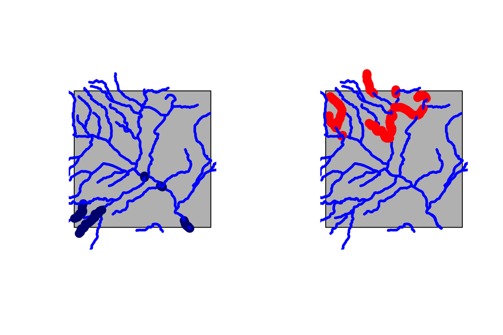
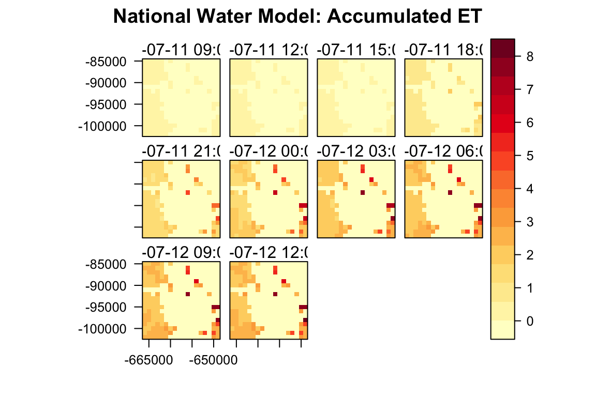
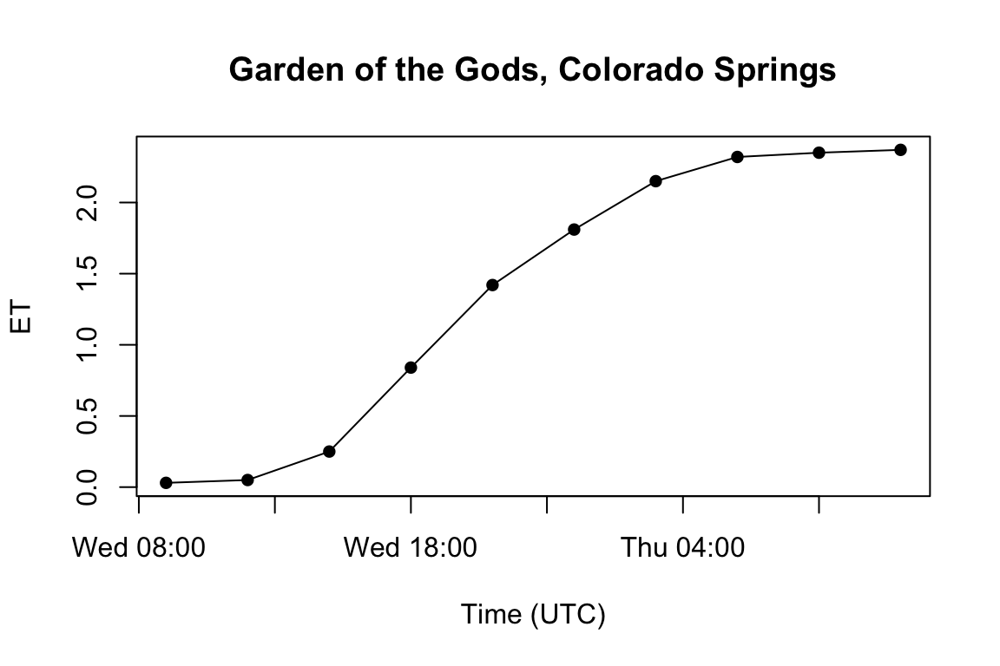

index.RmdIn August 2016 NOAA made the National Water Model operational aimed towards impact-based forecasting of weather and water events. The NWM runs on NOAA’s centralized Weather and Climate Operational Supercomputing System (WCOSS) utilizing the community WRF-Hydro modeling system. It delivers streamflow forecasts for the 2.7 million USGS NHDPlusv2 river reaches as well as 1-kilometer gridded analyses for a range of hydrologic variables across the CONUS.
The nwm package offers methods to access and subset this data in a quick fashion and returns processed data ready for analysis in the R environment.
Given the size of CONUS and the resolution of both point and grid data, the sheer size of output is enormous. Each day, approximately 400 GB of data relating to streamflow, terrain and atmospheric processes is produced. This data is stored for a 48 hour rolling window on the NOAA NOMADS server, and for a 40 day rolling window on the HydroShare THREDDS server hosted at RENCI. These outputs come from four unique model configurations that cycle on different intervals, using different forcing data, and generate different output.
The first challenge this package hopes to address is how people can better to understand and interact with the NWM output.
This is addressed with the look function which prints the meta data and description of each model configuration and output type.
The second challenge is how to this data can be queried and subset to an Area of Interest.
The is addressed through a dependency on the AOI package to define an area of interest; the getFilelist function to define the paths to the desired data sets, and the downloadNWM function to get the data and process it for analysis.
The third challenge is how to make these processes fast, efficient, and useful in the R environment.
This is handeled on the backed of the package making use of the parralization capabilities of foreach and doParallel packages along with the subsetting capabilities of the OPeNDAP framework
This document will walk users through the use of this package, but first we need to install nwm!
The NWM runs on four unique configurations - each cycling on a different time intervals, producing forecasts out to different lengths, and including varying suites of parameters.
Specifically these are analysis & assimulation, short range, medium range, and long range. To get a better understanding of these configurations users can call on the look() function. Below is an example for the short_range configuration.
look("short_range")
#> You are viewing metadata for the `short_range` configuration:
#> Forced with meteorological data from the HRRR and RAP models, the Short Range Forecast configuration cycles hourly and produces hourly deterministic forecasts of streamflow and hydrologic states out to 18 hours. The model is initialized with a restart file from the Analysis and Assimilation configuration and does not cycle on its own states.
#>
#> Valid Types include:
#> channel, reservoir, land, terrain, forcing
#>
#> Valid `t` values include:
#> 0, 1, 2, 3, 4, 5, 6, 7, 8, 9, 10, 11, 12, 13, 14, 15, 16, 17, 18, 19, 20, 21, 22, 23
#>
#> Valid `f` values include:
#> 1, 2, 3, 4, 5, 6, 7, 8, 9, 10, 11, 12, 13, 14, 15, 16, 17, 18The output of this call is sent to the R console and provides (1) a description of the configuration, (2) the output types offered, (3) the time when these forcasts are made (t), and (4) how far out - or forward - each goes (f).
For example a forecast made at noon for 3PM would have a t value of 12 and an f value of 3.
At the most general level, each model configuration generates three sets of outputs.
Channel output are point values generated at the outlets of each of the 2.7 million NHDPusV2 reaches in the CONUS
land outputs are gridded data set to a 1 km grid
forcing data are those parameters used to generate the channel and land forecasts, these are also 1 km gridded data.
look("medium_range", 'channel')
#> You are viewing metadata for the `medium_range` configuration and `channel` type:
#> The Medium Range Forecast configuration is executed four times per day, is forced with GFS model output and extends out to 10 days. It produces 3-hourly deterministic output and is initialized with the restart file from the Analysis and Assimilation configuration.
#>
#> Valid `channel` parameters include:
#> PARAM UNITS DESCRIPTION
#> "streamflow" "m3/sec" "Streamflow"
#> "nudge" "m3/sec" "Streamflow data assimilation increment"
#> "velocity" "m/s" "Stream velocity"
#> "q_lateral" "m3/sec" "Channel inflow"
#> Valid `t` values include:
#> 0, 6, 12, 18
#>
#> Valid `f` values include:
#> 3, 6, 9, 12, 15, 18, 21, 24, 27, 30, 33, 36, 39, 42, 45, 48, 51, 54, 57, 60, 63, 66, 69, 72, 75, 78, 81, 84, 87, 90, 93, 96, 99, 102, 105, 108, 111, 114, 117, 120, 123, 126, 129, 132, 135, 138, 141, 144, 147, 150, 153, 156, 159, 162, 165, 168, 171, 174, 177, 180, 183, 186, 189, 192, 195, 198, 201, 204, 207, 210, 213, 216, 219, 222, 225, 228, 231, 234, 237, 240Great so now using the look function you have the tools to check the parameters, cycle time and forecast duration of any configuration, type combination - now we can actually get some data!
Defining Area of Interest in the nwm package is based on the AOI package which was developed to help find, define, and refine AOI spatial objects. AOIs can be defined by a state, county or clip area generated from a location and bounding box. To learn more about this package please consult the package documentation.
Here is a basic example querying a 100 square mile AOI centered on ‘Colorado Springs, Colorado’. The AOI check() function can be used to view its boundaries:
getAOI(clip = list("Colorado Springs", 10, 10)) %>% check()
#> $AOI
#> class : SpatialPolygons
#> features : 1
#> extent : -104.9184, -104.7323, 38.76149, 38.90642 (xmin, xmax, ymin, ymax)
#> coord. ref. : +proj=longlat +ellps=GRS80 +towgs84=0,0,0,0,0,0,0+no_defs
#>
#> $mapWe can use our AOI to subset and download the NHD reaches:
system.time({
nhd <-getNHD(AOI)
})
#> user system elapsed
#> 0.325 0.019 2.459
head(nhd)
#> class : SpatialLinesDataFrame
#> features : 6
#> extent : -104.7981, -104.7656, 38.76338, 38.80435 (xmin, xmax, ymin, ymax)
#> coord. ref. : +proj=longlat +ellps=GRS80 +towgs84=0,0,0,0,0,0,0 +no_defs
#> variables : 91
#> names : id, ogc_fid, comid, fdate, resolution, gnis_id, gnis_name, lengthkm, reachcode, flowdir, wbareacomi, ftype, fcode, streamleve, streamorde, ...
#> min values : nhdflowline_network.1739134, 1739134, 1529805, 1999-06-22 23:00:00, Medium, 193371, East Fork Sand Creek, 0.348, 11020003000189, With Digitized, 0, StreamRiver, 46003, 3, 4, ...
#> max values : nhdflowline_network.1739241, 1739241, 1529851, 2009-07-22 23:00:00, Medium, 193719, Fountain Creek, 3.354, 11020003000271, With Digitized, 0, StreamRiver, 46006, 4, 5, ...Here we see that that there are 91 flow lines (so 91 points) where channel forecasts can be found from the NWM. To view these flow lines we can chain leaflet::addPolylines() to the check(AOI) call. We can also quickly label each river by its COMID using the popup options, and symbolize each reach by its order using weight.
check(AOI)$m %>% addPolylines(data = nhd, popup = paste0("COMID: ", nhd$comid), weight = nhd$streamorde)With an area selected, we next need to define the file list we need to subset. This requires defining a model configuration (config), the date(s), the time of forecast(t), and the time forward from each t, (f).
In this example we are getting the medium range, channel, forecasts made on the July 12, 2018 at 12AM, 6AM, and 12PM UTC time.
Remember the look() function can be useful in paramatrizing this query:
files = getFilelist(config = "medium_range", date = "20180712", type = "channel", t = c(0,6,12), f = 3)
print(files)
#> [1] "http://thredds.hydroshare.org/thredds/dodsC/nwm/medium_range/20180712/nwm.t00z.medium_range.channel_rt.f003.conus.nc"
#> [2] "http://thredds.hydroshare.org/thredds/dodsC/nwm/medium_range/20180712/nwm.t06z.medium_range.channel_rt.f003.conus.nc"
#> [3] "http://thredds.hydroshare.org/thredds/dodsC/nwm/medium_range/20180712/nwm.t12z.medium_range.channel_rt.f003.conus.nc"With a known AOI, and a list of files we can use the downloadNWM function to specifiy the parameter we want to grab from these files subset to the region. In this basic example
xx = system.time({
flows <-downloadNWM(AOI, files, "streamflow")
})This operation took 2.357 seconds to extract dim(flows$streamflow)[1] flow recods for the AOI>
Alternitvly we could grab the velocity values from the same file list simple by changing the parameter value to ‘velocity’:
xx = system.time({
vel <-downloadNWM(AOI, files, "velocity")
})head(flows$streamflow, 8)
#> COMIDS DateTime streamflow
#> 1 1529589 2018-07-12 03:00:00 0.00000
#> 2 1529589 2018-07-12 09:00:00 0.00000
#> 3 1529589 2018-07-12 15:00:00 0.00000
#> 4 1529591 2018-07-12 03:00:00 30.72379
#> 5 1529591 2018-07-12 09:00:00 30.72379
#> 6 1529591 2018-07-12 15:00:00 27.54547
#> 7 1529593 2018-07-12 03:00:00 0.00000
#> 8 1529593 2018-07-12 09:00:00 0.00000max = flows$streamflow[order(flows$streamflow$streamflow, decreasing = T),]
head(max)
#> COMIDS DateTime streamflow
#> 191 1529817 2018-07-12 09:00:00 133.8427
#> 212 1529847 2018-07-12 09:00:00 133.1364
#> 203 1529833 2018-07-12 09:00:00 132.4301
#> 218 1529853 2018-07-12 09:00:00 132.4301
#> 224 1529859 2018-07-12 09:00:00 127.8392
#> 227 1529861 2018-07-12 09:00:00 126.4266{par(mfrow = c(1,2))
vizFlows(AOI = AOI, data = flows$streamflow, num = 10, max = TRUE)
vizFlows(AOI = AOI, nhd = nhd, data = flows$streamflow, num = 10, max = FALSE)}
library(RColorBrewer)
files = getFilelist(config = "medium_range", date = "20180711", type = "land", t = 6, f = seq(3,30,3))
system.time({
d <-downloadNWM(AOI, files, "accet")
})
#> user system elapsed
#> 0.442 0.199 2.951
rasterVis::levelplot(d$accet,
main = "National Water Model: Accumulated ET",
names.attr = as.character(nwm::getGridTime(d$accet)),
col.regions = colorRampPalette(brewer.pal(9,"YlOrRd")))
check(AOI)$m %>% addRasterImage(x = d$accet[[1]], opacity = .8)
library(ggplot2)
loc = "Garden of the Gods, Colorado Springs"
pt = AOI::geocode(loc, pt = T)
vals = data.frame(date = getGridTime(d$accet), accet = c(raster::extract(d$accet, y = pt$pt)))
#> Warning in .local(x, y, ...): Transforming SpatialPoints to the CRS of the
#> Raster
plot(x = vals$date,
y = vals$accet,
type = 'o',
pch = 16,
ylab = "ET",
xlab = "Time (UTC)",
main = loc)